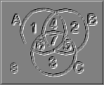

|  | Venn diagrams are an interesting method for rendering triadic relations on a two dimensional drawing surface. Certain marks (or annotations) indicate the existence of variables or constants in the distinguishable regions. |
Using java we are able to deliver this diagrammatic function via the existing library and computer lab workstations running available web browsers.
There are 3 example sets of exercises currently defined :
We are currently working on methods to ease the creation of exercise sets. If you are interested in working on the source code, please refresh your local copy, since it now has an AppletFrame class definition and takes a command line parameter for the codebase in html generation.Notice that there are a few immediate venn exercise package considerations :
The first consideration was certainly desirable and simply involved finger sweat over the existing exercises (or a fancy sed script;). The second consideration is a tad more involved since a professor will either want to answer the questions directly, or assign that to the graduate student, teaching assistant, or lab person each year, semester, or quarter as appropriate. Needless to say the install / maintenance tool has not been completed. The last consideration was decided on general principles of portability . . .
| Last modified | Comments and suggestions : | Return to Dr. Nute's | |
| 08/30/98 |
dnute@ai.uga.edu |
venn diagramming |
class materials. |